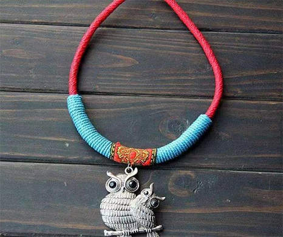
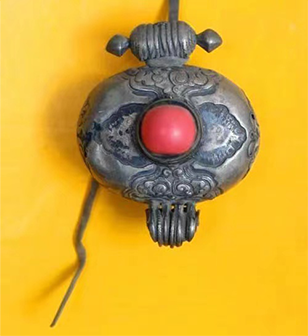

颈饰
颈饰
藏族特色的项链有很多种，最常见的是以绿豆大小的珠子串成，材料一般为松石、玛瑙、蜜蜡、青金石、檀木、藏银等，颜色多为红色，绿色、黄色、白色，串成项链的珠子的数量没有特殊要求，但是很多都以108颗为准，这与藏传佛教中108颗佛珠代表108种烦恼或者108尊佛的功德有关。


很多项链还带有吊坠，吊坠多呈圆形、椭圆形、水滴形，材料一般是松石、玛瑙、蜜蜡、青金石、玉石、藏银等。其中最为珍贵的“天珠”，藏语称为“孜”，关于它的来源说法很多，史学家认为这是从波斯一带传入西藏的手工饰品，但是藏族的传说故事中则认为“孜”是从天上掉下来的虫子变化而成的，至今未有定论，这也使得“孜”更加珍贵，其中九眼天珠是最为珍贵的。
项链一般是由珊瑚翡翠、松耳石、九眼珠组成。有的还要在其中一串项链的中间串一个小护身盒。护身盒:妇女使用的护身盒一般都比较小巧，有方的圆的扁圆的，上面镶有珊瑚和翡翠。护身盒又叫嘎乌盒，从来源来说，“嘎乌”是藏语的音译，指护身的盒子，由佛盒演变而来，原初它是表达对佛的虔诚，后来越做越精巧，成为人们喜爱的服饰。藏族妇女尤其喜欢用嘎乌等饰品装扮自己，显得更加妩媚动人。它是不分男女老少、佩戴较多的装饰物。嘎乌的形状有方也有圆，一般来说，男子用方的，女子用圆的，挂在脖子上。
藏族女子多爱在颈项上佩戴各色饰物，有用式样不同的古海贝化石串成的项链（名为“丝”），也有用彩珠、海贝化石、绿松石等混串而成的项链。
